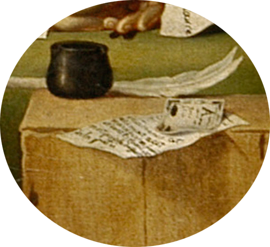
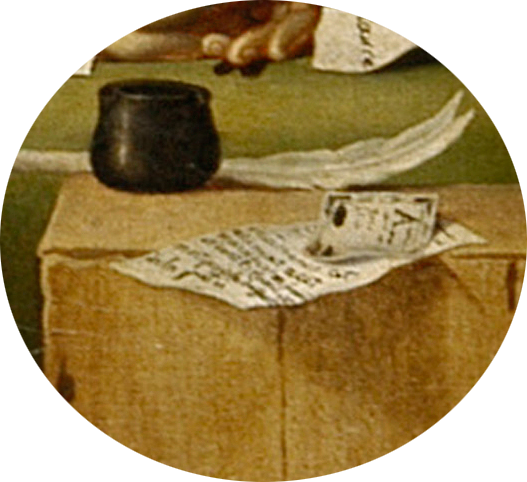
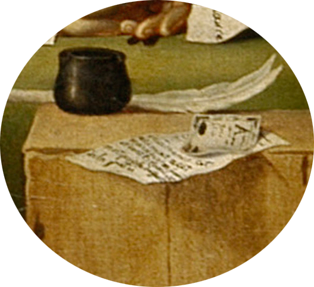

Жан-Поль Марат - политический деятель эпохи Великой французской революции, врач, радикальный журналист, один из лидеров якобинцев, друг Жак-Луи Давида. В 1789 г. он написал «Дар отечеству». Целью этого издания было изобличение врагов народа (Марат был одержим смертью противников революции). «Друг народа» много способствовал распространению среди народа, особенно в Париже, крайнего революционного фанатизма; его читали нарасхват, популярность его выразилась и в многочисленных циркулировавших тогда подделках под него.
Несмотря на то, что последние полтора месяца жизни Марат, страдая от тяжёлой болезни, не выходил из дома, не мог публично выступать и активно участвовать в политической жизни и управлении страной, он оставался основным объектом ненависти лишённых власти «людей государства» — жирондистов.Чтобы хоть как-то облегчить свои страдания, он постоянно сидел в ванне, писал там и даже принимал посетителей. Именно там 13 июля 1793 года Жан-Поль Марат и был заколот ярой поклонницей жирондистов, дворянкой Шарлоттой Корде. Марат умер, успев лишь крикнуть: «A moi, ma chère amie!» (Ко мне, моя подруга!).
Находите места интереса на картине.
Осталось найти
Смерть Марата

При создании картины, Давид поработал над телом еще более старательно, чем перед прощальной церемонией, и вместо жуткой шелушащейся плоти перед нами предстает изваяние из нетленного мрамора. Судя по всему, Давид тщательно продумал вопрос о том, под каким углом должна быть наклонена голова Марат, чтобы его черты выглядели наилучшем образом.
Глубокая рванная рана, нанесенная Шарлоттой Корде, преобразована в аккуратный надрез, вроде тех, какие изображают на теле Христа. Подобно Спасителю, предшествовавшему ему, мученик Марат славился своей добровольной бедностью("Он умер, отдавая последнюю корку хлеба бедным", - говорил Давид в Конвенте)
Опираясь на свой опыт Давид, мастер натюрморта, подчеркнул разницу между добродетельным гусиным пером и злодейским ножом Шарлотты Корде. Ручка ножа была изготовлена из черного дерева, но Давид заменил его слоновой костью, на которой капли крови сверкали особенно ярко.
На картине незримо присутствуют две женщины. Шарлотту Корде представляет письмо-приманка, запачканное кровью Марата, в котором говорится "Я очень несчастна, и этого достаточно чтобы заслужить Ваше участие". На самом деле в письме этих слов не было, она пробудила его интерес обещанием дать информацию опредателях, но для образа святого мученика удобнее было изобразить его как жертву, а не как жестокого охотника за предателями, каким он был
Этой предательнице надо было противопоставить настоящую женщину, вдову и мать, исполненную патриотическими чувствами. Поэтому на столе лежит так же письмо от вдовы французского солдата, погибшего в бою, матери пятерых детей.
Убитый ЛепелетьеКлятва в зале для игры в мяч
Немного биографии
Родился 30 августа 1748 г. в Париже в семье богатого буржуа. Мальчик рано обнаружил склонность к рисованию. В 1766 г. его приняли в Королевскую академию живописи и скульптуры, где учителем Давида стал художник Ж. М. Вьен, создававший картины на античные сюжеты. Закончив Академию, молодой живописец, как тогда было принято, отправился на стажировку в Италию. Там он провёл четыре года (1775—1779 гг.). По возвращении на родину Давид стал членом академии и регулярно участвовал в её выставках.
Одно из полотен было выставлено в революционном Париже уже после штурма Бастилии и сразу стало очень популярно. На нём изображались такие знакомые парижанам картины — женщины оплакивают погибших. С этого момента Давид стал признанным художником Французской революции.
Картина «Клятва в зале для игры в мяч» (1791 г.) не была закончена мастером, так как большинство её героев — депутатов парламента — уже через год либо оказались в эмиграции, либо пали жертвами якобинского террора. В 1793 г. Давид пишет композиции «Убитый Лепелетье» и «Смерть Марата», совмещая в них черты портрета и исторического полотна. Сам художник являлся депутатом Конвента, участвовал в создании новых революционных праздников. Именно ему была поручена организация Национального музея в Лувре.
После прихода к власти Наполеона I Давид стал главным придворным живописцем. Он оказался необыкновенно плодовит, сделал множество портретов императора («Наполеон при переходе через Сен-Бернар», 1800 г., и др.), его жены Жозефины, придворных («Мадам Рекамье», 1800 г.; портреты четы Серизиа, 1795 г.) и генералов, а также запечатлел торжественные события («Коронация», 1805—1807 гг).
После поражения Наполеона Давид был вынужден уехать в Брюссель (1816 г.), где и умер 29 декабря 1825 г.


 
